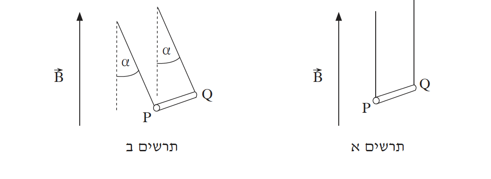
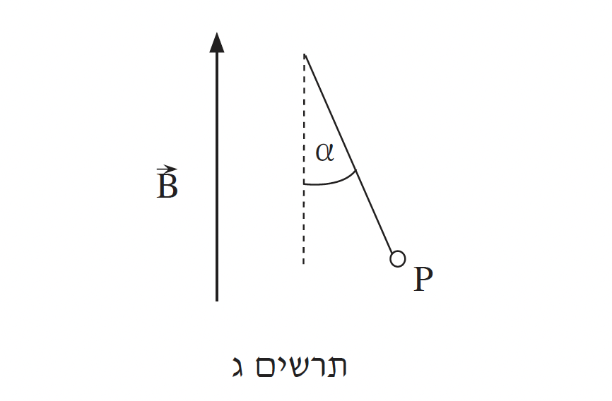

שאלה 5
במעבדה שורר שדה מגנטי אחיד, B, מאונך לקרקע וכיוונו כלפי מעלה.
תלמיד רוצה למדוד את גודל השדה. לשם כך הוא משתמש במוט מוליך גלילי PQ.
התלמיד קושר את קצות המוט לשני חוטים זהים. החוטים קשורים בקצותיהם האחרים לשתי נקודות הנמצאות באותו גובה, כמתואר בתרשים א כך שהמוט PQ תמיד מקביל לקרקע.

הניחו כי השדה המגנטי של כדור הארץ זניח ביחס לשדה B, וכי מסת החוטים זניחה ביחס למסת המוט PQ.
כאשר התלמיד מעביר זרם חשמלי במוט PQ, המוט סוטה ממקומו. המוט מתייצב כך שנוצרת זווית α בין כל אחד משני החוטים ובין הכיוון האנכי, כמתואר בתרשים ב.
בתרשים ג המוט מסורטט כך שרואים את הקצה P שלו.
העתיקו את תרשים ג למחברותיכם, וסרטטו בו את כל הכוחות הפועלים על המוט PQ.

מהו כיוון הזרם במוט — מ-P ל-Q או מ-Q ל-P? נמקו.
(8 נקודות)
התלמיד משנה כמה פעמים את עוצמת הזרם במוט, ומודד בכל פעם את עוצמת הזרם, I, ואת זווית הסטייה, α.
תוצאות המדידות מוצגות בטבלה שלפניכם.
| 3.5 | 3 | 2.5 | 2 | 1.5 | 1 | I (A) |
| 19.3 | 16.7 | 13.5 | 10.0 | 8.5 | 5.7 | α (°) |
בלי להסתמך על תוצאות המדידות, פתחו ביטוי מתמטי המקשר בין זווית הסטייה, α, לבין עצמת הזרם, I. (8 נקודות)
התבססו על הביטוי שפיתחתם בסעיף ב וציינו מה הם שני המשתנים שיש ביניהם יחס ישר. נמקו.
ערכו במחברותיכם טבלה ובה ערכים של שני המשתנים שציינתם בתת-סעיף ג (1).
סרטטו גרף המתאר את הקשר בין שני המשתנים שציינתם בתת-סעיף ג (1).
(10 נקודות)
נתון כי אורך המוט PQ הוא ℓ = 0.2m ומסתו היא m = 10gr.
חשבו בעזרת הגרף שסרטטתם את גודל השדה המגנטי B. (7.33 נקודות)